Grid, List and Sphere.
Switch views at any time. Your filters stay exactly as they are.
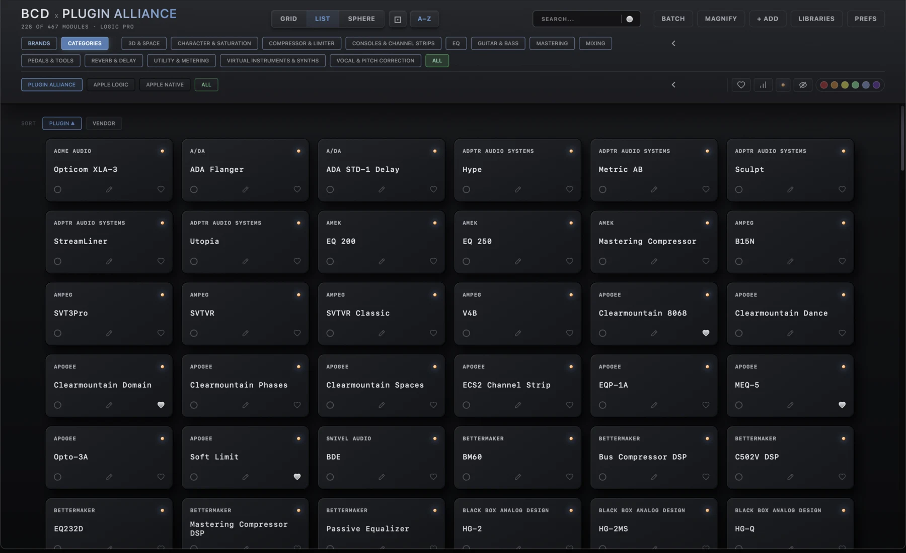
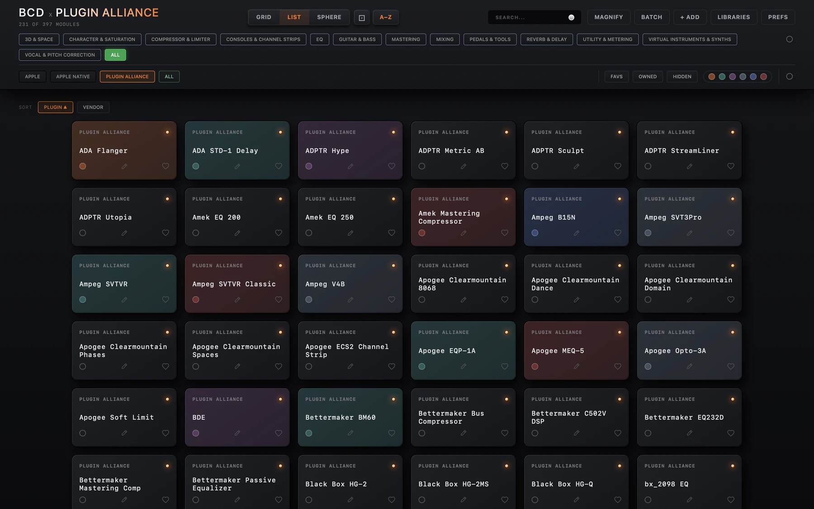

Everything you need, along one bar.
Views, search and tools sit in the header. The Brands | Categories switch, the company row and the filters sit just beneath it. Here is what each one does.
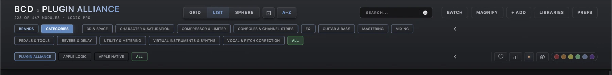
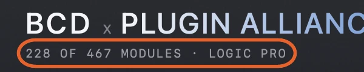
The module count
Under the title, it shows how many modules match what you are looking at, out of the whole collection, and the DAW the app is set up for. It updates as you search and filter.
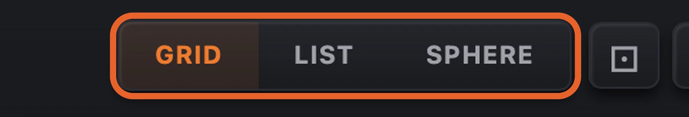
Grid, List and Sphere
Grid shows tiles with artwork. List shows rows sorted by plugin or company. Sphere is an endless drifting field for browsing and discovering.
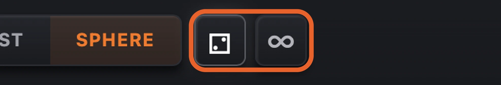
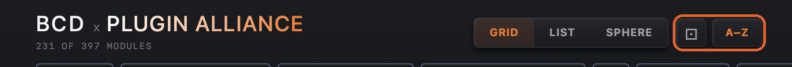
Dice and A–Z
The dice shuffles the order. In Sphere it reshuffles the field, and the ∞ button switches between an endless field and a single one, with each module once. In Grid and List, once a company or category is chosen, A–Z puts the tiles back in order.
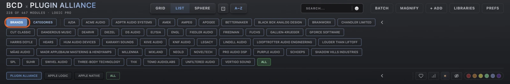
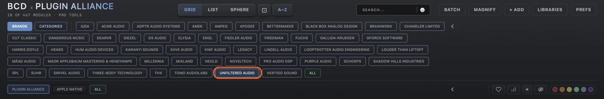
Brands and Categories
A Brands | Categories switch sits above the artwork. Brands shows every brand in the catalogue, such as Brainworx, SPL, Lindell Audio, Unfiltered Audio and elysia. Categories shows Plugin Alliance’s own categories.
Pick a brand and the grid narrows to it. Combine it with a category, and click the brand again to clear it. The two choices narrow each other, so you never click into an empty result.
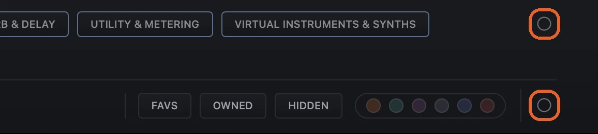
Categories and companies
The company row picks the library: Plugin Alliance, Apple Logic or Apple Native. Filter by company, then by category or brand. The arrow at the end of the top row, just under Magnify, opens and closes the brands or categories, and the arrow on the company row opens and closes the companies.

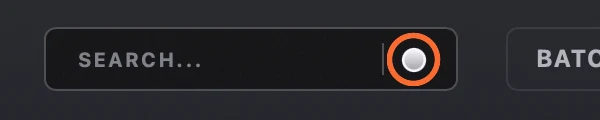
Search
Type to filter modules by name. Type a brand name and you find all of its plugins, even where the brand is not in the plugin’s name. You don’t need to click the box first: a letter typed anywhere jumps into search, Esc clears it, and Return loads the top result. The circle at the end opens your DAW’s own plugin search. It is white until you type, then it goes grey.

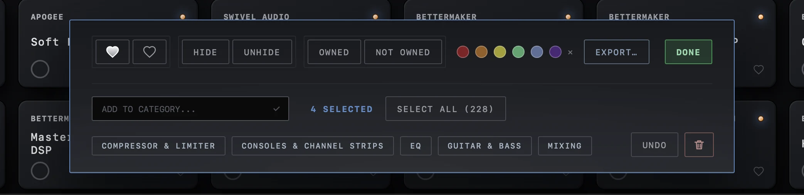
Batch
Click Batch, then click modules to select them, or use Select all. A bar opens at the bottom to favourite or unfavourite, hide or unhide, mark Owned or Not Owned, apply a colour tag, add to a category, or export. Undo steps back if you change your mind, and the bin removes your own additions. Done closes the bar, and Exit leaves Batch.
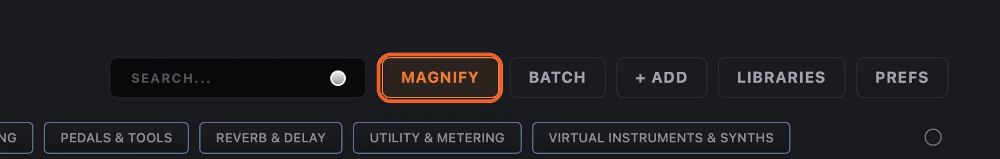
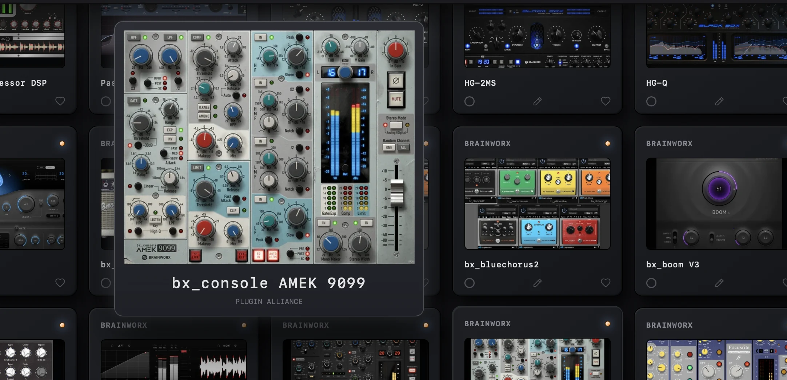
Magnify
Switch it on and hover any module to see its artwork enlarged, with its name and company. It is switched off while you batch-select.
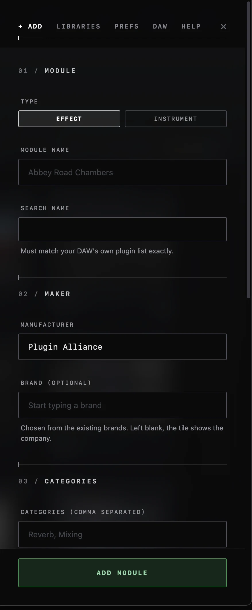
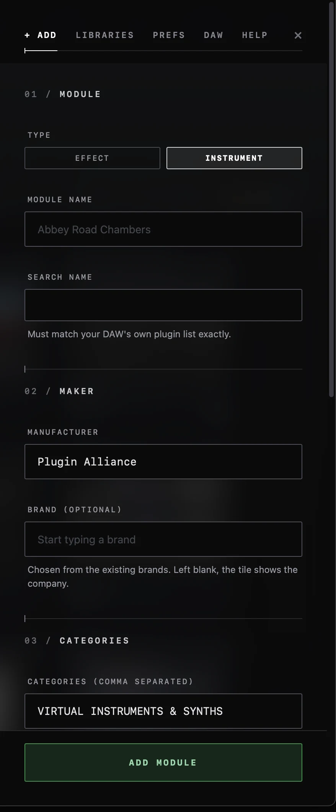
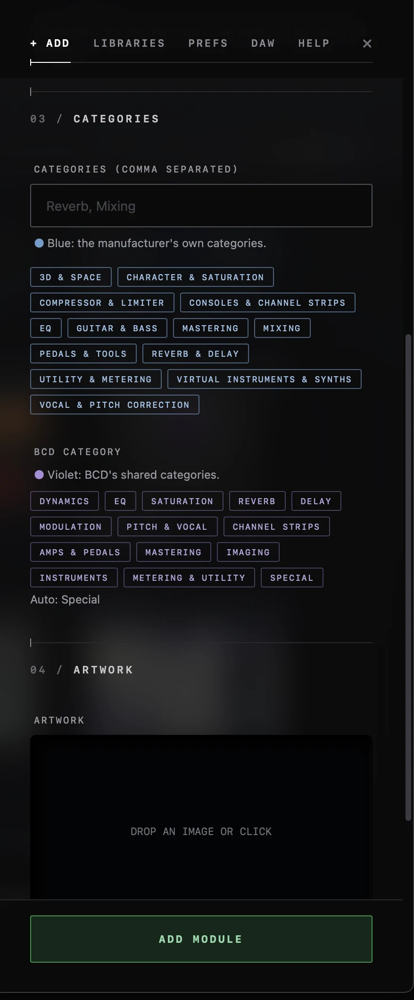
+ Add
In the evaluation build, + Add adds a module by hand. The form is in clear sections: Module, Maker, Categories, Status and Artwork. Choose Effect or Instrument, give the module a name, then enter the exact name your DAW uses in its plugin list, so it can be found. The optional Brand field suggests a brand from the name and only accepts brands already in the catalogue. Choose the manufacturer, then the categories: the manufacturer’s own are blue and BCD’s shared categories are violet. Under Status, mark it Owned or Hidden and add a colour tag, then drop in artwork and press Add Module. The tabs at the top stay in place while the form scrolls.
If it is an instrument, Instrument must be selected. Choosing an instrument-type category turns it on for you.
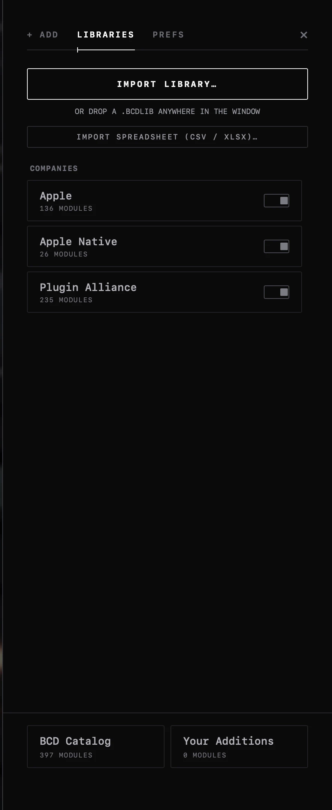
Libraries
In the evaluation build, Libraries imports a library, or drop a .BCDLIB file anywhere in the window, or import a spreadsheet (CSV or XLSX). Every company has its own switch, so you can show or hide whole libraries. BCD Catalog and Your Additions show how many modules come from each.
Plugin report scans your standard plugin folders and saves an Excel report to your Desktop: one row per plugin, the formats each is installed in, duplicates, and folder sizes. It only reads; nothing is moved, deleted or sent anywhere.
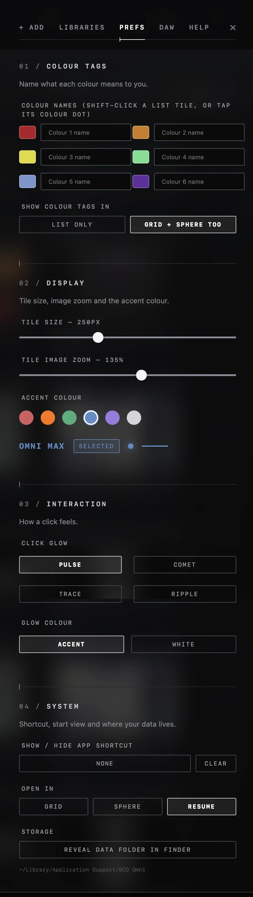
Prefs
Name your six colour tags. Set the tile size and artwork zoom, pick an accent colour, and choose a click glow and its colour. Choose whether the app opens in Grid, Sphere or where you left off, set a keyboard shortcut to show or hide the app, and reveal its data folder in Finder.
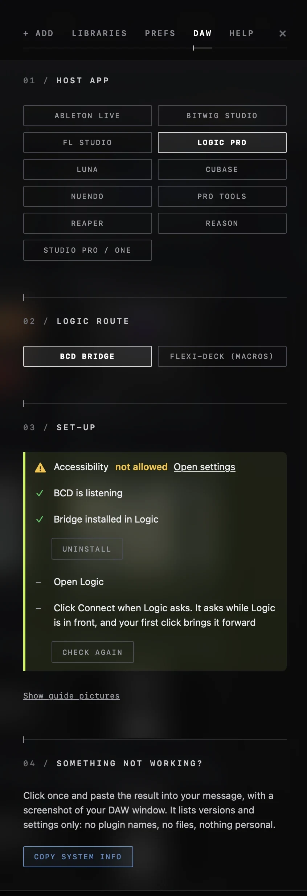
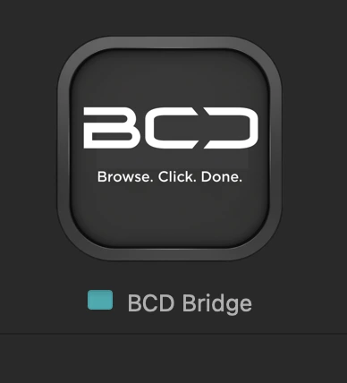
DAW
The DAW tab is where you choose your DAW, from Ableton Live, Bitwig Studio, Cubase, FL Studio, Logic Pro, LUNA, Nuendo, Pro Tools, REAPER, Reason and Studio Pro / Studio One. No other software is needed. For Logic, the app installs a small script, the BCD Bridge, during set-up. In Logic it is listed under Control Surfaces > Setup, as shown below. A short checklist shows whether the permission has been granted, whether the app is listening and whether the bridge is installed, with an Open settings link beside each permission and a Show guide pictures link for step-by-step help. A few DAWs (Pro Tools, Nuendo, Cubase, Studio Pro and Reason) also need the Screen Recording permission.
Pro Tools needs to be the English version, and the app loads AAX plugins only. A click takes the first result for names ending in “(mono)”, and a double click lets you pick.
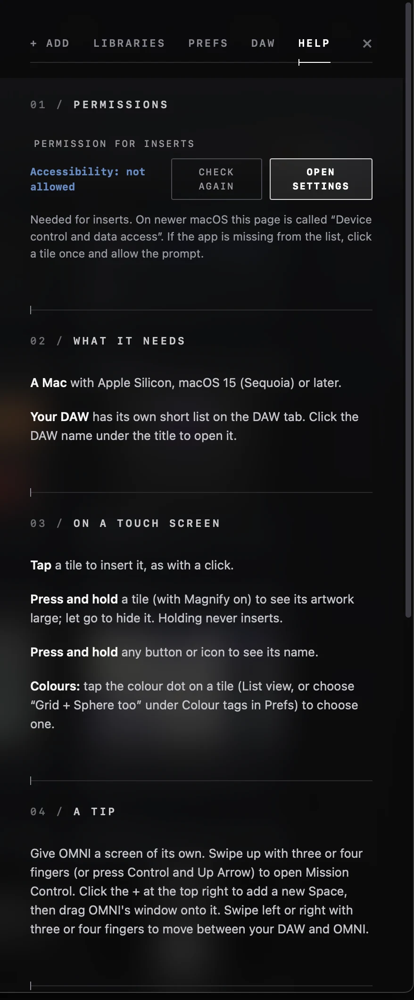

Help
The Help tab shows whether the permission the app needs has been granted, with buttons to check again and to open the right Settings page, and lists what the app needs. It explains how to use the app on a touch screen, and has a tip for giving the app a screen of its own. Copy system info puts your versions and settings on the clipboard, with no plugin names, no files and nothing personal, to paste into a message to us. Below it are short fixes for the usual problems.
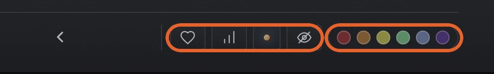
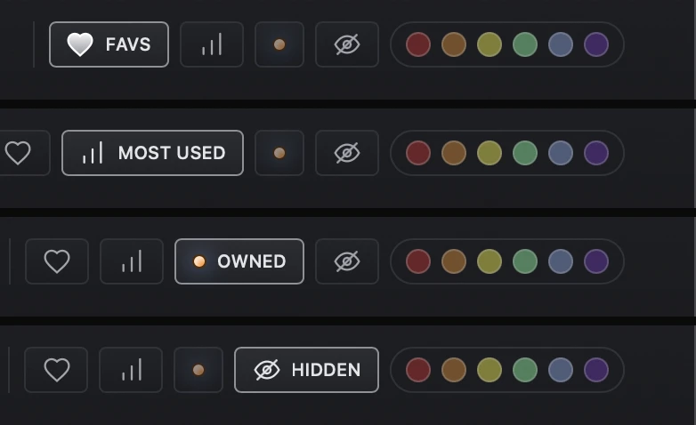
Favs, Most Used, Owned and Hidden
Four icons at the lower right of the header each filter the collection, and each has an off and an on state. The heart shows only your favourites. The bars show Most Used: your 20 most inserted plugins, busiest first, counted per DAW. The owned light shows the plugins you own or don’t, and the eye with a slash shows what you have put away. Hover over an icon to see its name and how many. The filters combine with search, company and category.
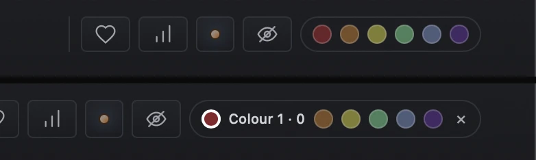
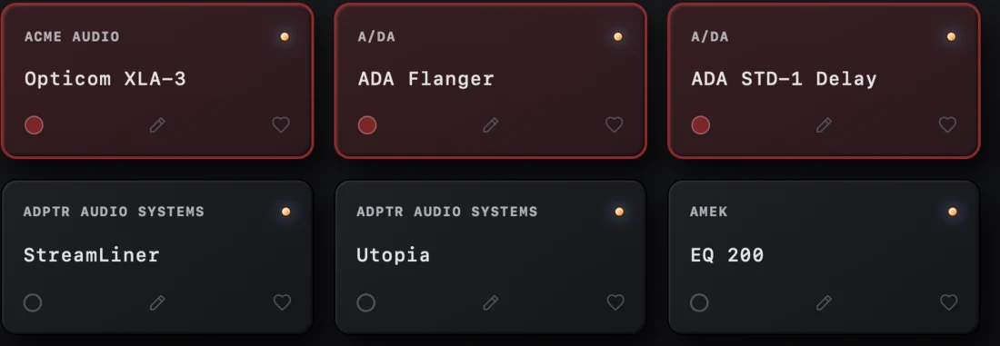
Colour tags
Mark plugins with one of six fixed colours (red, orange, yellow, green, blue and purple) to organise them around your workflow. Name each colour in Prefs, and hover over a tag to see its meaning.
Filtering. Click a colour in the header to filter the collection, or pick several at once. A small ✕ clears them.
On the tiles. Tags show in every view: a small coloured circle at the bottom left of a tile in Grid and Sphere, and in List the whole tile takes a coloured frame as well as the circle. To tag many at once, select them with Batch and click a colour on the bar.

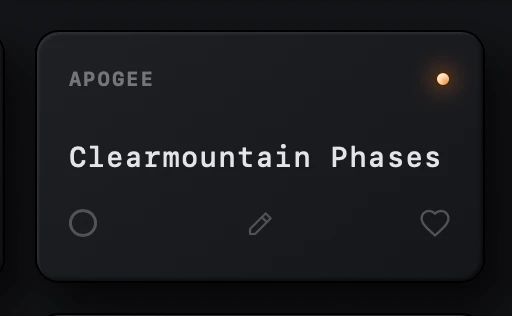
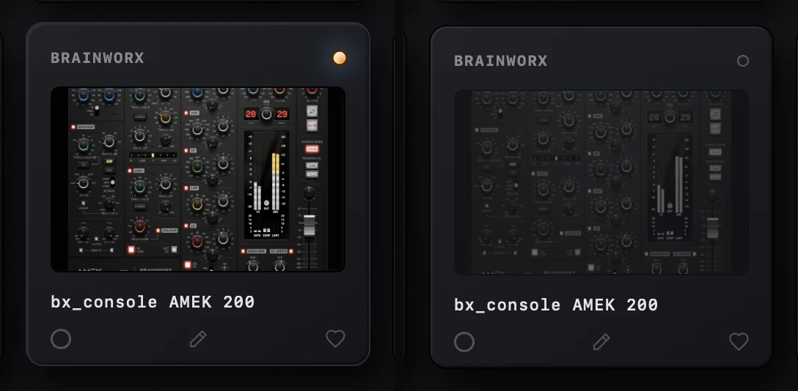
Module cards
Each tile shows its brand across the top and the plugin’s own name below, so far fewer names are cut off. Click the artwork or the name and the plugin goes onto the selected track in your DAW. The dot at the top right marks owned (lit) or not owned (hollow), the pencil edits the module, and the heart adds it to your favourites. Plugins you don’t own stay visible but dimmed, as in the last pair of images, and a heart on one works as a wish list, which is useful when a trial ends. Grid tiles show the artwork, List tiles show the name.